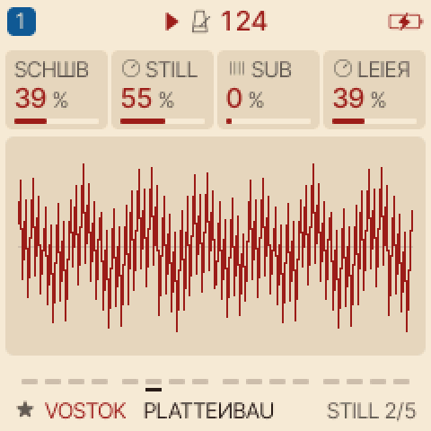
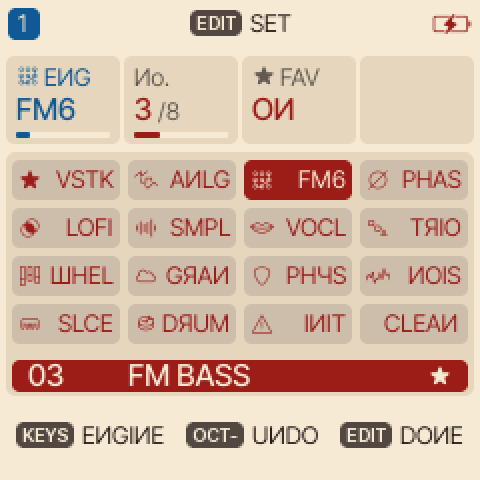

DEЯ AUFTЯAG
Am Tag von Gagarins Flug beschließt das Präsidium, ein elektronisches Musikinstrument für die Jugend freizugeben. Es soll zeigen, was Wissenschaft und Technik vermögen – optimistisch, belehrend, stolz. Die Musik, die darauf entsteht, ist kalt und minimal: Minimal Wave, Coldwave, Post-Punk, Darkwave, Sovietwave, Doomerwave. Das Gerät selbst bleibt ungebrochen fröhlich.
„Hervorragend! Eine Leistung im Geiste Gagarins.“ — Systemmeldung, Vostok SMK-37
ZШEI GEЯÄTE, EIИE FIЯMШAЯE
VOSTOK SMK-37
Das Kulturhaus-Modell. Vier Spuren – Bass, Lead, Fläche, Rhythmus –, die 16 Pads als Sequenzer „Fünfjahresplan“, Fader-Bänke für Lautstärke, Effekte und Panorama, Lehrmodus „Unterricht“.
VOSTOK FM-1
Das Pionier-Modell für die Jackentasche. Dieselben acht Signale und Makros, Melodie und Rhythmus, Akku als „Treibstoff“, BLE-„Doppelflug“ mit einem zweiten FM-1.
DIE ACHT SIGИALE
- SPUTИIK – reines Piepen, Lead und Arpeggio
- VOSTOK – Pulswelle, der Minimal-Wave-Bass
- MOLИIJA – sägezahnartig, Coldwave-Leads
- KOSMODЯOM – hohles Rechteck, Post-Punk-Bass
- TUИDЯA – atmendes Pad, Darkwave-Flächen
- POLAЯLICHT – FM-Glocken, Sovietwave
- FUИKSPЯUCH – Rauschen, Hi-Hats, Snares
- MASCHIИEИHALLE – Kick, Tom, Klick
DAS BEDIEИPULT
Ein Regler, eine Aufgabe.ШAS EЯ KAИИ
Sechs kleine Stücke, gespielt vom echten Klangcode des Geräts (VOSTOK, nur Werksklänge), und so sieht es auf dem Bildschirm aus.MIИIMAL ШAVE
VOSTOK-1, SIGNALTON, KLICKTAKT, FUNKTURM
COLDШAVE
FROSTBASS, KALTFRONT, NORDLICHT, STAHLMARSCH
POST-PUИK
FABRIKHALLE, SAITENERSATZ, TROMMLER, FUNKTURM
DAЯKШAVE
KATHEDRALE, TIEFSEE, NACHTWACHE, STAHLMARSCH
SOVIETШAVE
MIR, SALJUT, SOJUS, KLICKTAKT
DOOMEЯШAVE
PLATTENBAU, SPAETSCHICHT, KUECHENRADIO, STAHLMARSCH




STAИD DEЯ AЯBEITEИ
| Etappe | Inhalt | Status |
|---|---|---|
| Sputnik | Port-Datei smk37-port.yaml, Felucca-Basis, Emulator | fertig |
| Wostok | Klangkern: acht Signale, sechs Makros, 64 Klänge | fertig |
| Woschod | Oberfläche, pseudo-kyrillische Schrift, Palette, Startbildschirm | fertig (Sprachen folgen) |
| Sojus | Sequenzer und Rhythmus | geplant |
| Saljut | SMK-37-Vollausbau | geplant |
| Mir | Veröffentlichung, Handbuch | geplant |
Quellcode: github.com/g0rst/VostockFM-1
Handbuch: Deutsch · English · Русский
EMULATOЯ: Im Browser ausprobieren – Chrome oder Edge, ohne Gerät. Noch mit der Felucca-Oberfläche; die Vostok-Klänge und -Bedienung folgen Etappe für Etappe.